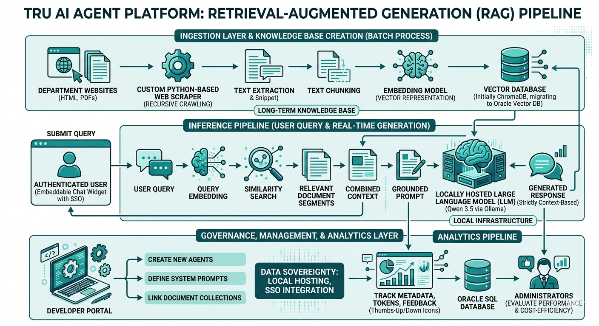

Department-Focused AI Assistants · Thompson Rivers University
Deploying context-aware, data-grounded AI agents across TRU's departmental web presence— built on a locally-hosted RAG pipeline, with privacy and security at its core.
Rather than a single monolithic chatbot, we're deploying focused AI agents tailored to each TRU department's own data — surfacing only what's relevant to the user's current context.
An agent embedded in the Risk & Safety website, trained exclusively on their policies, procedures, and FAQs — giving staff and students precise, department-specific answers.
Students visiting TRU World get an agent scoped to international student resources — admission, visas, housing — nothing extraneous, nothing out of scope.
Each department uploads their documents via a simple dropbox interface — PDFs, HTML pages, or any source material. We ingest those files to build the agent's knowledge base automatically. Same infrastructure, different data, same high-quality experience.
Once individual agents are validated and stable, a master orchestrator will route queries to the appropriate sub-agent — a single entry point across all of TRU.
A lightweight floating widget, embedded on any TRU web page, delivering a consistent and trustworthy experience for every user.
Unobtrusive widget pinned to the bottom-right corner — always available, never in the way.
Agents handling sensitive or restricted data sit behind an SSO-based auth gate — only authorised personnel gain access.
Pre-populated FAQ chips on load — users can dive in immediately without typing a single character.
Every response references its source with a live hyperlink — full transparency, zero hallucination risk without a paper trail.
Each reply closes with a context-aware follow-up suggestion, keeping the conversation productive and guiding users toward what they actually need.
All inference runs on-premise at TRU. No data leaves the university's infrastructure — complete data sovereignty.
A three-layer architecture: Ingestion builds and maintains the knowledge base; Inference handles live queries; Governance tracks usage and ensures accountability.

Four active challenges the team is tracking — each with a clear path forward.
Department data lives behind SharePoint authentication. We need a Copilot licence on the AI-Automation team email to scrape and ingest that content.
Originally told Oracle DB — we've built 4 tables in Supabase (PostgreSQL-compatible, open source) ready to migrate. MongoDB access granted this morning (Nikita is onboarding it). Vector database contact is on vacation — follow-up pending.
The local Ollama endpoint is not responding on the team workstation. A support ticket has been raised with IT — awaiting resolution before on-premise inference can be tested end-to-end.
A working SAML simulation is in place. Clarification questions were sent this morning to the relevant team — awaiting responses to finalise the production-ready implementation.
Two strategic questions the team would like to table for input from stakeholders today.
We are currently running Qwen 3.5 9B — a relatively small but fast and secure model. However, it is developed by a Chinese organisation. Before broader deployment, the team would like institutional guidance on whether this is appropriate.
Mitigation so far: tested against common prompt injection and adversarial attacks with promising results. The model will go through internal red-teaming before any external rollout.
It is currently unclear whether the university's on-premise server can handle concurrent inference requests at realistic student and faculty traffic volumes.
Next step: coordinate with the infrastructure team to establish expected traffic estimates, then run load tests post-deployment to validate throughput and response latency under peak load.
Immediate priorities to keep the project moving forward.